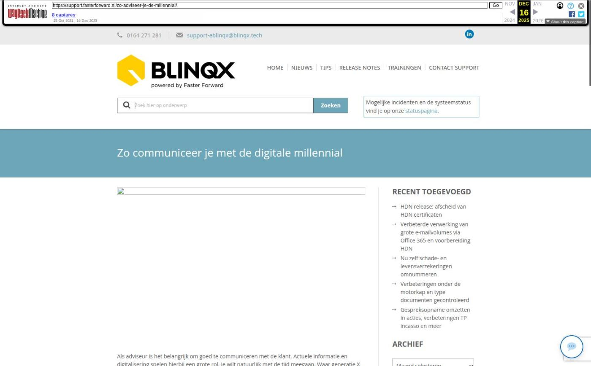

Zo communiceer je met de digitale millennial

Tekstinhoud
Title: Zo communiceer je met de digitale millennial | Support
URL: https://web.archive.org/web/20251216031939/https://support.fasterforward.nl/zo-adviseer-je-de-millennial/
Source element: <article>
---
Als adviseur is het belangrijk om goed te communiceren met de klant. Actuele informatie en digitalisering spelen hierbij een grote rol. Je wilt natuurlijk met de tijd meegaan. Waar generatie X als communicatiemiddel e-mail en sms gebruikte, heeft generatie Y whatsapp en social media. Veel kantoren maken gelukkig al gebruik van deze kanalen. Maar welke informatie sluit aan op de behoefte van generatie Y?
In deze blog vertellen we je hoe je deze doelgroep kunt benaderen. Zo blijf je als kantoor verbonden met je klanten. De klant voelt zich begrepen door de adviseur. Door te weten wat er speelt is het voor een adviseur gemakkelijker om een langdurige relatie met de klant aan te gaan. Ook helpt de juiste communicatie bij het aantrekken van potentiële klanten.
Wie zijn de millennials?
De millennials – ofwel generatie Y – zijn opgegroeid toen het internet op gang kwam. Ze zijn geboren tussen 1980 en 1995 en zijn in 2021 dus tussen de 26 en 41 jaar oud. Ondanks een onzekere toekomst zijn ze erg positief, ondernemend en flexibel. Én met nu al 35% van de mondiale beroepsbevolking, zijn ze binnenkort ook de grootste generatie qua omvang.
We lichten drie kenmerken uit van millennials en vertellen hoe je hier als financieel adviseur op inspeelt. Zo speel je in op de behoeften van deze generatie, zorg je dat ze klant worden én klant blijven.
1. Duurzaam
Millennials zijn zich bewust van het milieu. Producten die ze kopen zijn 'biologisch afbreekbaar' en 'gerecycled'. Daarnaast zoeken ze duurzame producten en willen ze hun kleding repareren zodat deze langer meegaat. Ze voelen zich dan ook verbonden met bedrijven die het milieu en duurzaamheid hebben verankerd in hun bedrijfsdoelen.
Neem verduurzaming mee in het hypotheekgesprek. Bespreek de mogelijkheden van zonnepanelen, HR++ glas, dakisolatie en gasloos wonen. Door beter te isoleren en slimmer te verwarmen wordt hun huis milieuvriendelijker. Gebruik hiervoor bijvoorbeeld het Duurzaamheidsprofiel in Elements.
Adviseer hypotheken van banken die investeren in duurzaamheid en het verbeteren van de wereld. Denk hierbij aan Triodos en ASN Bank.
Communiceer regelmatig over de mogelijkheden van verduurzaming. Niet alleen over wonen, maar ook over vakantie, verzekeringen, pensioen en elektrische auto's. Gebruik hierbij 'groene' woorden en afbeeldingen die de boodschap versterken.
2. Digitaal
Millennials zijn opgegroeid met online shopping en social media. Ze zijn altijd online en regelen veel zaken digitaal. Ze verwachten dan ook een soepele klantervaring van ieder bedrijf. Is die niet aanwezig of valt het tegen? Dan haken ze snel af. Daarnaast zijn ze erg zelfredzaam en ondernemend, waardoor ze alles zelf willen uitzoeken. Als financieel adviseur is het dus van belang dat je digitaal bent en de online zoektocht faciliteert.
Zorg dat de millennial zich kan oriënteren op jou website. Laat ze hun maximale hypotheek berekenen en rentepercentages vergelijken. Willen ze meer informatie? Dan plannen ze op jou website ook gelijk een persoonlijke afspraak met je in. Uit het World Insurance Report (2021) blijkt namelijk dat millennials een grote adviesbehoefte hebben, doordat ze weinig ervaring hebben met financiële producten.
Digitaliseer de hypotheekaanvraag. Gebruik een online klantportaal (Digimap) of een consumentenapp (Assurantie Apps) waarmee hij de zijn documenten digitaal aanlevert. Biedt ook Ockto aan, zodat de consument een deel van zijn gegevens met DigiD kan aanleveren.
Let wel op: de millennial is zich heel bewust over de data die je verzamelt en wil graag weten wat er tegenover staat. Leg dus uit wat je verzamelt en bied hem korting of een extra dienst aan als wederdienst.
Stuur geen ouderwetse formulieren, maar gebruik gebruiksvriendelijke formulieren. Met de online formulieren van Digital Only kan hij zijn schade melden, verzekeringen opzeggen, inboedelwaarde berekenen en SEPA machtigingen ondertekenen. Zo zorg je voor een digitale en efficiënte klantreis.
3. Individualistisch en vrij
Mijn eigen leven is het belangrijkst. Dat gevoel hebben veel millennials. Ze willen hun mening geven en inspraak hebben. Daarnaast zijn ze jong, volgen hun hart, zijn ondernemend en zijn expressief. Oftewel: ze voelen zich vrij en willen liever met je samenwerken als je hun ideeën aanhoort en met ze meedenkt.
Communiceer over de financiële mogelijkheden die hun vrijheid geven. Grote kans dat millennials van 35 tot 40 overwaarde hebben op hun woning. Met deze overwaarde kunnen ze verbouwen of verhuizen, waardoor hun droomhuis werkelijkheid wordt. Daarnaast is het wellicht ook mogelijk om de hypotheeklasten te verlagen, zodat ze meer geld overhouden.
Door de woning te verduurzamen kan de waarde van de woning stijgen. Binnen Elements is het dankzij de koppeling met de Nationale Hypotheekbond mogelijk om de woningwaarde op te halen.
Maak je communicatie persoonlijk. Een millennial knapt af op een e-mail met irrelevante informatie en is minder loyaal aan merken. Geef hem persoonlijke aandacht met een relevante boodschap. Gebruik hiervoor PortefeuilleSignalen om deze momenten te signaleren. Bijvoorbeeld wanneer de ORV goedkoper kan, de klant jarig is of de rentevastperiode afloopt.
Laat ze meedenken en feedback geven op je bedrijfsvoering. De millennial waardeert het als je naar hun ideeën luistert en hiermee aan de slag gaat.
Maak geen keuzes in hun naam en dwing ze geen keuzes op. Laat de millennial altijd zelf kiezen. Waarschijnlijk gaan ze namelijk zelf nog op onderzoek uit om jouw advies te toetsen. Laat ze daarom hun eigen keuzes maken.
Inzicht in alle generaties
Met deze informatie heb je een beeld van de millennial en hoe je deze adviseert. Deze tips bieden natuurlijk geen 100% garantie op succes. Probeer vooral zelf uit wat goed werkt voor jouw organisatie en klantgroep.
Houd onze supportwebsite in de gaten voor blogs over generatie X (41 tot 56 jaar) en babyboomers (57 tot 75 jaar). Daarnaast plaatsen we ook anders tips over Elements op onze tips pagina.
Bronnen
ManpowerGroup. (2016). De carrières van millennials: een visie op 2020. Lees hier ».
Trendsactive. (2017). Hoe millennials richting geven aan marketing. Lees hier ».
Pew Research Center. (2020). Millennials overtake Baby Boomers as America's largest generation. Lees hier ».
Cap Gemini. (2021), World Insurance Report, 2021. Lees hier ».
Adfiz. (2021). Advies in cijfers. Lees hier ».
Geplaatst op 4 oktober 2021 (Laatste update: 17 februari 2022)